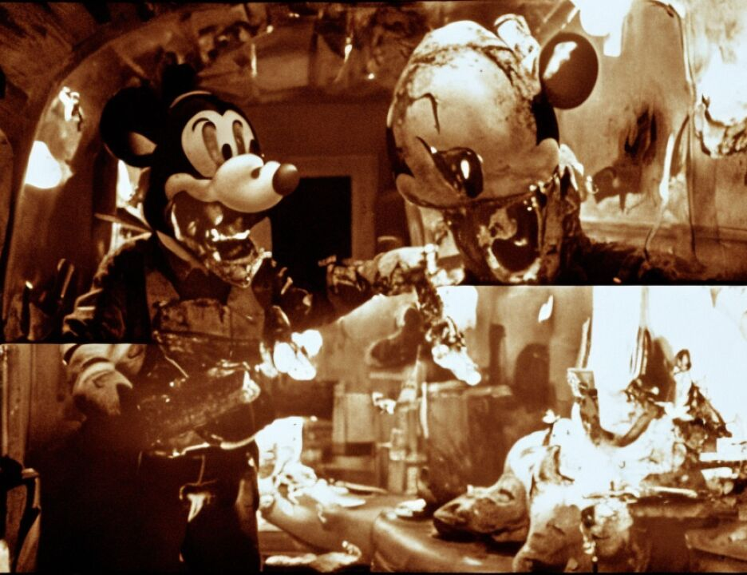

23 interpretation of Islam?
24 A. No, actually, in proper management sense. If you don't
25 have any expertise in certain fields, you should not make
611
1 decisions because then it will be an ill decision.
2 Q. Does that have to do with the money as well as just in
3 terms of battlefield management?
4 A. That's what I'm saying. If you are a financier, you could
5 just pay the money, of course, to get the credit in the sight
6 of God. However, if you don't have any expertise in certain
7 areas, it would be best not to give any decision making -- not
8 to be part of the decision making.
9 Q. And the decision thinking that you are talking about is
10 essentially military?
11 A. Yes.
12 Q. And you thought that his lack of military experience
13 was -- withdrawn -- that he lacked enough military experience
14 to make military decisions?
15 A. To the extent he was dangerous.
16 Q. Yes. To the extent that it may cost the lives of some of
17 the people working under him following his orders?
18 A. Yes.
19 Q. But when you went back to Peshawar in the late 80s to
20 sight the scopes on the rifles, in fact that was for Bin
21 Laden's organization, correct, or his men?
22 A. That was to my surprise. The deal initially was -- well,
23 again, if you don't mind, I'm just going to take you a step
24 back.
25 Q. I don't know. I think if you just let me ask the
612
1 questions.
2 A. Sure.
3 Q. We'll just keep it --
4 A. Sure.
5 Q. -- that way.
6 It was supposed to be split a different way, correct?
7 A. Yes.
8 Q. But then, ultimately, more went to Bin Laden than you had
9 thought would happen?
10 A. Correct.
11 Q. And but you went back and you, even after you found out
12 that Mr. Bin Laden had the rifles, you sighted the scopes for
13 them?
14 A. Because it all happened when I got there, actually.
15 Q. But you did it?
16 A. Yes.
17 Q. And then when you were asked by Mr. El Hage to purchase
18 the plane, you went forward with that as a commercial, purely
19 commercial business transaction, correct?
20 A. Absolutely.
21 Q. And the same is true when you returned a month or two
22 later to make the flight to Nairobi?
23 A. Yes.
24 Q. And the same is true when you came from Cairo to go back
25 to the Sudan to try to fly the plane again a year and a half
613
1 later?
2 A. That's correct.
3 Q. And all those were purely commercial transactions, having
4 nothing to do with anything else?
5 A. No.
6 Q. And this was despite your earlier disagreements and
7 reservations about Mr. Bin Laden, correct?
8 A. Because then the issue was not in existence anymore. He
1